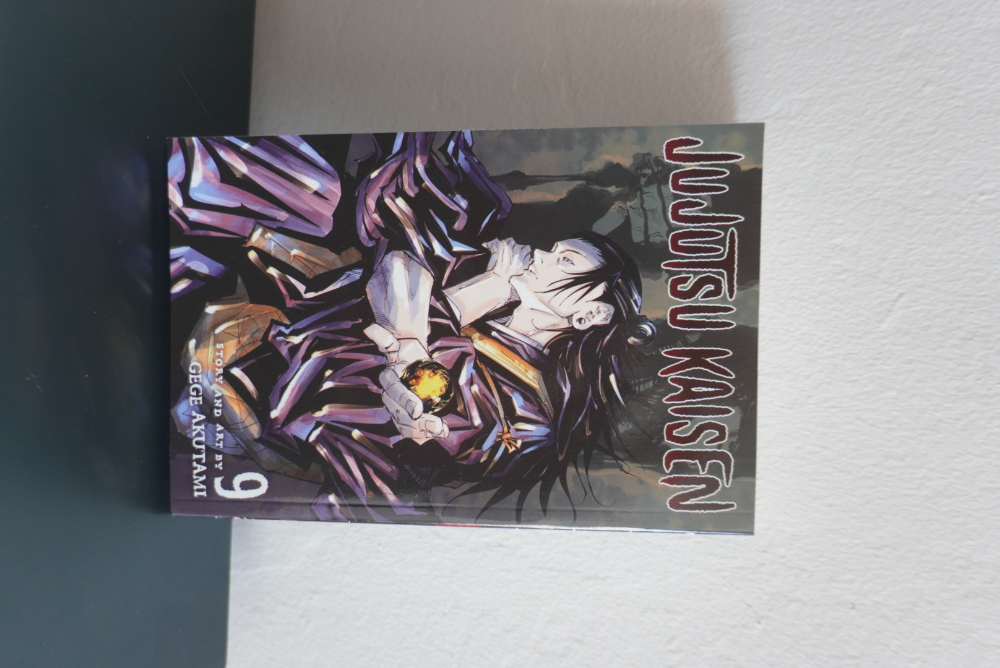

Like I said, my wallet begs to differ. I started collecting the volumes of the JJK manga because I have a spending problem. I've justified my purchases with the idea that I'm only buying the volumes with cool cover arts... but I think this reasoning is being used to easily. Out of all of the volumes I own, this is my favorite cover.
Publisher: Shonen Jump Review: 10/10 Favorite part:
Back to Home